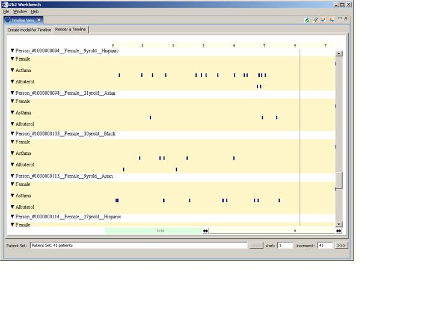

Render the Refined Previous Query
Click on the 'Render a Timeline' tab
Scroll to see all patients.
In our example, Person#1000000094 has two occurrences of Albuterol.
Person#1000000098 has no occurrences.

Double click on the Timeline View tab to return to the normal workbench display.